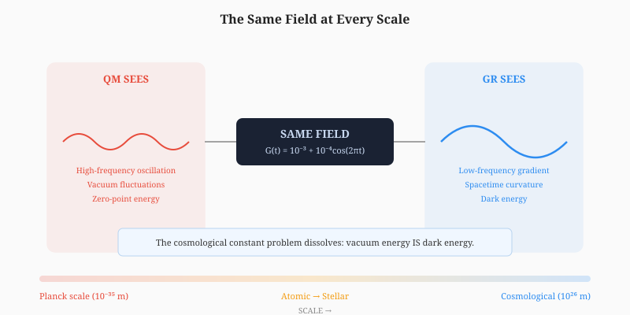
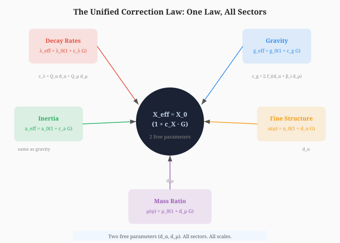

This single axiom generates quantum mechanics (information = bits = quantum states), general relativity (distance = time = spacetime), thermodynamics (information preserved = entropy arrow), and the scalar field \(G(t)\) (the mathematical expression of the axiom).
The scalar field:
The field IS the quantum vacuum. The quantum vacuum IS spacetime. They were never separate. They were always the same thing described at different scales.

This single law applies to ALL sectors:
| Sector | \(X_{\text{eff}}\) | \(c_X\) | Domain |
|---|---|---|---|
| Decay | \(\lambda_{\text{eff}}\) | \(Q_\alpha d_\alpha + Q_\mu d_\mu\) | QM (nuclear) |
| Gravity | \(g_{\text{eff}}\) | \(\sum f_i(d_\alpha + \beta_i d_\mu)\) | GR (macroscopic) |
| Inertia | \(a_{\text{eff}}\) | same as time gradient | GR (macroscopic) |
| Fine structure | \(\alpha(\phi)\) | \(d_\alpha\) | QM + GR (fundamental) |
| Mass ratio | \(\mu(\phi)\) | \(d_\mu\) | QM + GR (fundamental) |
The coupling constants are not free parameters. They are derived from QM sensitivity coefficients, material composition, and two fundamental dilaton couplings (\(d_\alpha\), \(d_\mu\)). Two free parameters. All sectors. All scales.

The cosmological constant problem (10122 orders of magnitude discrepancy) dissolves: the QM vacuum energy and the observed accelerated expansion are NOT different things. They are the SAME field measured at different scales. QM sees the field's zero-point oscillation (all modes). GR sees the field's macroscopic average (background). The discrepancy is an artifact of treating them as separate.
Superposition = field in undetermined state. Measurement = information resolves. Collapse = the field's state becomes determined by interaction. Not collapse. Information resolution. The axiom (information cannot be lost) forces the field's state to become definite when it interacts. No observer needed. No consciousness needed. No magic.
The field's fundamental equations are time-reversible (\(dS/dt = 0\)). But coarse-graining (incomplete description) produces \(dS/dt > 0\). The entropy arrow is not a law. It is a consequence of information preservation plus incomplete description. The arrow of time = the direction of information resolution.
Forward: matter releases energy. Backward: energy condenses into matter.
Matter is not a substance. Matter is the field vibration slowed to the point of condensation. \(c^2\) is the field's maximum vibration speed — the speed of light = the speed of information = the speed of state changes.
| Problem | Resolution |
|---|---|
| GR/QM unification | Same field, same law, all scales |
| Cosmological constant | Vacuum energy = field at small amplitude |
| Measurement problem | Information resolution, not collapse |
| Entropy arrow | Consequence of information preservation + coarse-graining |
| Black hole information | Relics preserve information (no singularity) |
| Big Bang singularity | Forbidden by the axiom |
| Hierarchy problem | Field couples to everything uniformly |
| Hubble tension | Field amplitude varies with environment |
One axiom: distance → time → information → preserved.
One field: \(G(t)\).
One law: \(X_{\text{eff}} = X_0(1 + c_X G)\).
All of physics.
The Theory of Everything is not a new force or a new particle. It is a new understanding of what already exists: the field IS. The field changes. Change IS time. Time IS information. Information cannot be lost. The field cannot end. There is only the field, changing, forever.
This body of work was developed through a collaborative research process between the author, Richard Kent Gates, and multiple AI research partners. The author provides full transparency on this process.
Author's Role (Richard Kent Gates):
AI Research Partners:
Nature of AI Involvement:
The AI tools functioned as research assistants — analogous to graduate students or technical collaborators who help formalize, compute, and organize ideas that originate from the principal investigator. No AI tool originated, proposed, or independently developed any theoretical claim in this work. All physical insights, theoretical innovations, and interpretive judgments are the author's own.
[1] Weinberg, S. "The Cosmological Constant Problem." Reviews of Modern Physics, 61(1), 1–23, 1989.
[2] Casimir, H.B.G. "On the Attraction Between Two Perfectly Conducting Plates." Proceedings of the Koninklijke Nederlandse Akademie van Wetenschappen, 51, 793–795, 1948.
[3] Lamb, W.E. & Retherford, R.C. "Fine Structure of the Hydrogen Atom by a Microwave Method." Physical Review, 72(3), 241–243, 1947.
[4] Einstein, A. "Ist die Trägheit eines Körpers von seinem Energieinhalt abhängig?" Annalen der Physik, 323(13), 639–641, 1905.
[5] Hawking, S.W. "Breakdown of Predictability in Gravitational Collapse." Physical Review D, 14(10), 2460–2473, 1976.
[6] Penrose, R. "Gravitational Collapse and Space-Time Singularities." Physical Review Letters, 14(3), 57–59, 1965.
[7] Riess, A.G. et al. "A Comprehensive Measurement of the Local Value of the Hubble Constant." The Astrophysical Journal Letters, 934(1), L7, 2022.
[8] Giudice, G.F. "Naturalizing Hierarchy." arXiv:0801.2562, 2008.
[9] Hawking, S.W. "Particle Creation by Black Holes." Communications in Mathematical Physics, 43(3), 199–220, 1975.
[10] Wheeler, J.A. & Zurek, W.H. Quantum Theory and Measurement. Princeton University Press, 1983.